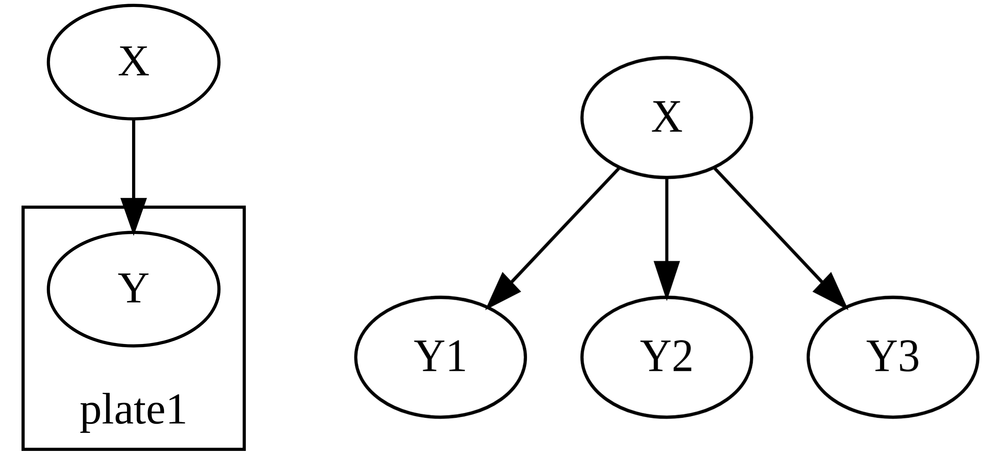

Plate Notation
In this tutorial, you will learn how to use the plate notation in DagSim to represent replicated nodes. If you are not familiar with using DagSim, please see Specifying a simulation for a general overview of the framework, and Quickstart for examples on how to use the framework.
The plate notation is a template-based representation language that allows for a convenient and compact way of representing nodes that are replicated in the graph. Instead of defining and drawing a node (that should be replicated) multiple times, you define that node once and encapsulate it inside a rectangle (thus the name plate).
For example, the two graphs below are equivalent, where the plate on the left hand side is replicated three times to unfold as the graph on the right hand side:
{kind=link}
In DagSim, you specify the name of the plate in which a node resides, if any, and the number of replications of each plate in the graph. You can have as many plates as you want in the graph, though currently, a node can only reside in one plate.
The following are examples of how to exactly do this in Python and YAML.
In Python code, you add a plates argument to the node definition and give it the name of the plate in which that node resides, and then in the definition of the graph, you specify the number of replications of each plate in the graph, in the form of a dictionary of (plate_name:number_of_replications) key-value pairs, as shown in the following example:
import dagsim.base as ds
import numpy as np
def add_noise(x):
return x + np.random.normal()
X = ds.Node("X", function=np.random.normal)
Y = ds.Node("Y", function=add_noise, args=[X], plates=["plate1"])
graph = ds.Graph([X,Y], plates_reps = {"plate1": 3})
data = graph.simulate(10)
By default, when you call the draw method on the graph, you will get the image view as the one on the left hand side above (which we call the folded view). To get the view as on the right hand side, you call draw method with the argument folded=False:
graph.draw(folded=False)
In YAML, you follow a very similar way of defining plates, specifying the plate in which each node lives, if any, and the number of replications of each node in the graph. You would specify the simulation above as follows:
graph:
python_file: functions_file.py # the path of the python file containing the definition of the add_noise function
plates_reps:
plate1: 3
nodes:
X:
function: numpy.random.normal
Y:
function: add_noise(X)
plates: plate1
instructions:
simulation:
csv_name: plates_demo
num_samples: 10